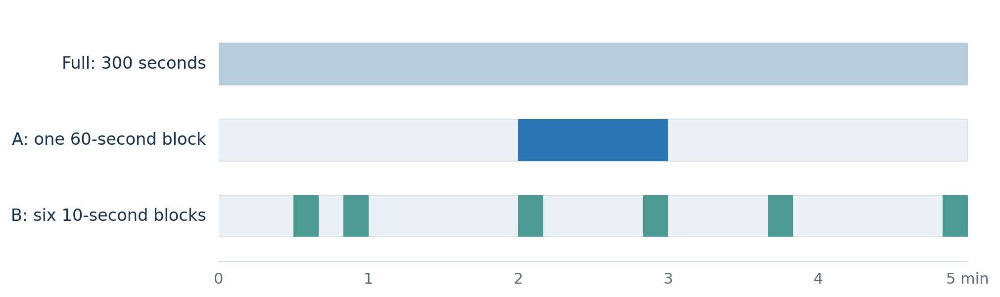
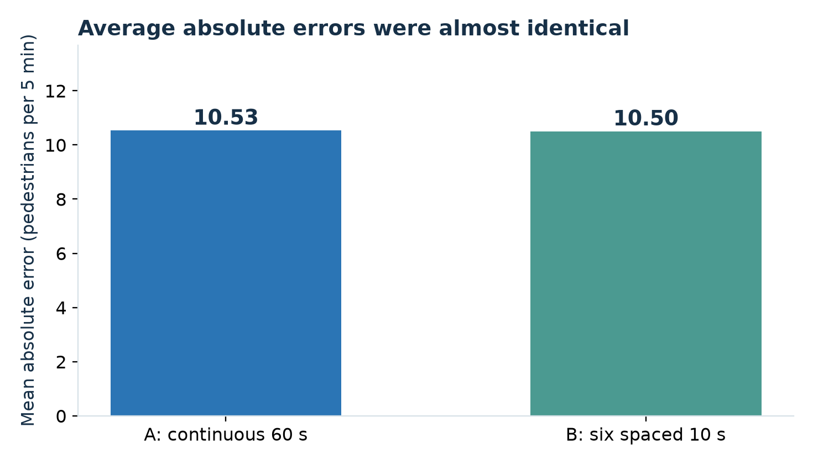
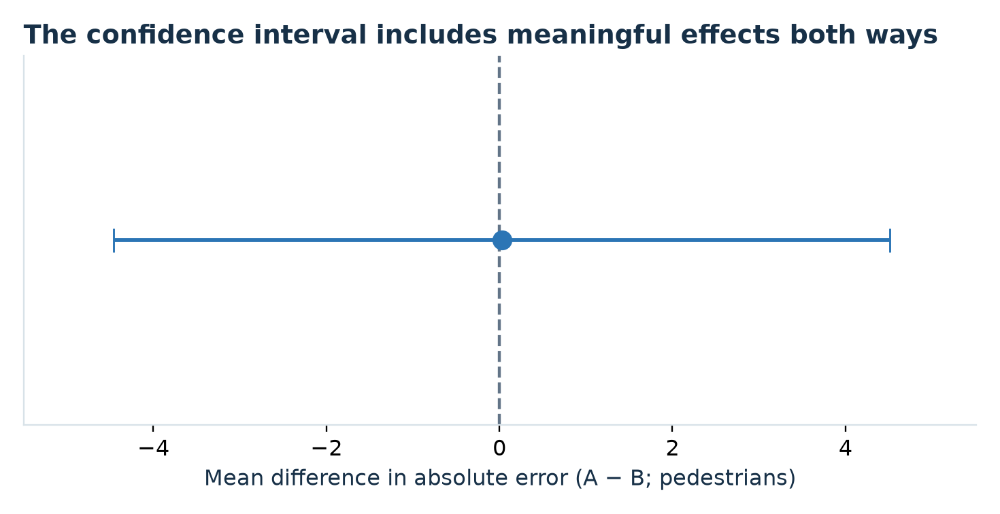
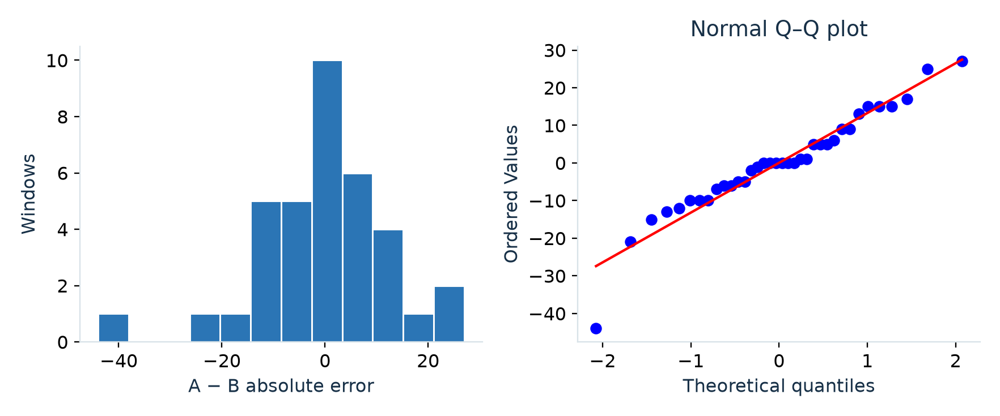

Pedestrian crossing estimates from continuous and distributed video samples
Aarya Deshpande and Tanya Sharma
Duke University | AIPI 510 Module Project 2 | November 3, 2026
Abstract
We compared two ways of estimating a five-minute pedestrian crossing count from 60 seconds of fixed-camera footage: one continuous minute and six distributed ten-second intervals. A frozen random protocol selected 36 nonoverlapping windows from the Abbey Road archive on November 3, 2026. A single observer recorded 828 crossing events while viewing the full windows; both sample counts were derived from the same event timestamps. Mean absolute error was 10.53 pedestrians for Method A and 10.50 for Method B. The paired mean difference, A minus B, was 0.028 pedestrians (nominal 95% CI -4.46 to 4.51; paired t(35) = 0.0126, p = 0.9900; Cohen’s d_z = 0.0021). Neither method showed a clear accuracy advantage. This result does not demonstrate equivalence. One site, one day, correlated windows and unverified human counting accuracy limit the inference.
Background and motivation
Pedestrians often arrive in groups, so an estimate based on one short stretch of video may depend strongly on the selected time. Spreading the same observation budget across a recording could capture more of this variation, but short intervals can also land on unusually busy bursts. We tested that allocation decision using the official Abbey Road Crossing Cam in London [1]. The study concerns crossings of the nearer zebra crossing, not all activity at the junction or the number of unique people in the area.
Research question and hypotheses
Which sampling method produces smaller absolute error when estimating the total number of pedestrian crossings during five minutes? For window i, F_i is the full-window reference count. A_i and B_i are the two sampled counts. Estimates are 5A_i and 5B_i; absolute errors are E_Ai = |5A_i − F_i| and E_Bi = |5B_i − F_i|. Let D_i = E_Ai − E_Bi. Positive values favor B.
H₀: μ_D = 0, meaning equal mean absolute estimation error. H₁: μ_D ≠ 0. The comparison is two-sided; either sampling method could be more accurate.
Experimental design
The independent variable was the sampling method. The primary dependent variable was absolute estimation error, measured in pedestrians per five-minute window. Each window supplied a paired comparison. Method A served as the continuous-sampling comparator; the full 300-second tally was the common reference. Pedestrian behavior was observed rather than experimentally manipulated.
The eligible frame covered 08:00–15:59 GMT on November 3, 2026, partitioned into five-minute slots. The 09:00–09:10 period was excluded before counting because the archive is split at 09:06. This left 94 eligible slots. Python random.Random(20261103) selected five slots from each of the first four hourly strata and four from each of the last four, for 36 nonoverlapping windows. Some selected windows were adjacent. The schedule and interval offsets were fixed before counting and were not changed in response to pedestrian activity.
Within a window, A selected one of five nonoverlapping 60-second blocks uniformly. B selected one of five ten-second blocks uniformly within each of six consecutive 50-second strata. Each method therefore observes 60 video seconds and gives each second a 20% inclusion probability. All counting intervals are half-open: include their start and exclude their end. The hourly selection fractions differ, so the unweighted analysis estimates a contrast for these selected windows rather than a representative full-day traffic total.

Figure 1. A and B allocate the same 60-second observation budget within a 300-second window. The illustrated intervals come from the frozen protocol.
Sample size and assumption based power
The schedule fixed 36 windows before collection. For sample-size calibration, a two-sided paired t-test with α = 0.05 and assumed standardized paired effect d_z = 0.50 gives nominal power 83.1%. The corresponding 80% target is 33.37 pairs, rounded up to 34, using statsmodels TTestPower [2, 4]. The effect assumption was hypothetical, not estimated from these observations. This calculation was verified after collection, when the 36-window sample size was already fixed. It provides a planning scenario rather than a documented prospective justification.
The 83% figure assumes independent pairs and does not guarantee adequate power here. With mean cluster size 4.5, the rough design-effect approximation 1 + (m − 1)ρ gives effective pair counts of 26.7 for ρ = 0.10 and 17.6 for ρ = 0.30, with nominal t-test power about 70% and 51%. These are illustrations, not estimates of the actual correlation or corrected power. Eight unequal hourly strata on one day offer limited independent information. The study was not designed to establish equivalence.
Data collection and cleaning
Aarya counted each individual once on reaching the midpoint of the nearer zebra crossing, in either direction. Vehicles, cyclists, sidewalk walkers and the distant crossing were excluded. He watched each full window and pressed a counter button. The local Firefox extension logged actual video playback time and automatically derived A and B counts. Varying playback speeds changed viewing pace, while all observation intervals remained defined in video seconds. People who moved partway and returned required observer judgment.
The export contains 834 event rows, including six undone events. Cleaning removes only those marked deleted and retains every original row in the raw file. Recomputing counts from the remaining 828 events and the frozen intervals exactly reproduces all 36 Full/A/B export rows. The source metadata confirms dated archives, complete [0, 300] playback coverage and an automatic endpoint for every window. This checks timing and software consistency; it does not independently verify whether every pedestrian was labeled correctly.
The original validity dropdowns were blank. After collection, Aarya confirmed that the crossings had been clearly visible during counting and that all 36 windows were usable; no windows were excluded. That statement is saved separately in data/review/observer_confirmation.json. The raw exports and their original analysis-inclusion flags remain unchanged. The analysis uses the observer confirmation as its eligibility record. No independent second annotation or recount was performed, and no numerical annotation-accuracy rate is claimed.
Statistical methods and assumptions
The main comparison is a two-sided paired t-test on D_i, with its nominal 95% t confidence interval and Cohen’s d_z = mean(D)/SD(D). The paired structure controls for the full count and arrival pattern within each window. Valid population inference assumes approximately independent window differences and a suitable sampling distribution of their mean; the hourly clustering weakens that assumption. Shapiro–Wilk and a Q–Q plot describe the differences but cannot establish independence or prove normality.
Sensitivity analyses include Wilcoxon signed-rank using the asymptotic method, discarding the six zero differences and accounting for tied ranks; an exact paired sign-flip test of the mean using integer dynamic programming; and an exact sign flip of the eight hourly totals. The sign-flip and signed-rank checks require symmetry or exchangeability beyond equality of means [3, 5]. They are model-based sensitivity checks, not tests justified solely by random assignment of sampling labels. A and B are distinct designs and were not interchangeable treatment labels.
We also calculated an equally weighted mean of the eight hourly means and a percentile bootstrap resampling eight entire hours 15,000 times with seed 20261103. Equal-hour and equal-window weighting target different summaries because hourly quotas differ. These exploratory checks do not eliminate dependence, and only eight distinct hours limit cluster inference. No multiplicity-adjusted post hoc comparisons were needed for the single A/B contrast; sensitivity tests are not separate confirmatory discoveries.
Results
| Outcome | A continuous minute | B six ten-second intervals |
|---|
| Sample crossings | 159 | 144 |
| Mean absolute error | 10.53 | 10.50 |
| Median absolute error | 8.5 | 8.5 |
| SD absolute error | 7.40 | 10.08 |
| Root mean squared error | 12.81 | 14.46 |
| Mean signed error | -0.92 | -3.00 |
The full reference averaged 23.0 crossings per window (SD 10.57). A was closer in 15 windows, B in 15, and 6 were tied. The mean paired absolute-error difference was +0.028 pedestrians, with SD 13.26. The nominal paired t-test gave p = 0.9900 and 95% CI [-4.46, 4.51], with d_z = 0.0021.

Figure 2. Average absolute estimation errors across the 36 paired windows.
Shapiro–Wilk gave p = 0.082; the diagnostic does not reject normality at 0.05, but that is not proof of a normal distribution. Wilcoxon gave p = 0.894. The exact paired sign-flip p-value was 1.000. The hourly means ranged from −6.75 to +4.80 pedestrians. Their equal-hour mean was -0.15, with t-test p = 0.913 and CI [-3.28, 2.98]. The hour-cluster sign-flip p-value was 1.000; the hour-resampling percentile interval was [-2.38, 2.24]. These checks show no clear direction while retaining their stated assumptions.

Figure 3. Nominal paired-t 95% interval for A minus B absolute error. Negative favors A; positive favors B.
Interpretation and limitations
The observed average gap is small relative to variability between windows. It does not justify choosing either sampling method on accuracy alone. A nonsignificant test does not establish equal accuracy: the nominal confidence interval allows advantages of several pedestrians in either direction. RMSE is descriptively lower for A, while the prespecified primary metric was absolute error; this secondary difference is not evidence of a general winner.
One illustrative window, 10:25–10:30, contained 43 recorded crossings. A estimated 35 and B estimated 95. Its absolute errors were 8 and 52, showing that short sampled intervals can overlap an unusually dense burst. It was retained with the other predefined windows rather than excluded because B performed poorly.
All windows came from one camera and one day. Adjacent windows and shared hourly travel patterns may create dependence, and the random interval positions were realized only once. Single-observer counting at varying playback speeds may miss pedestrians in groups, introduce reaction delay near interval boundaries or classify partial crossings inconsistently. Buffering was mentioned by the observer; the software uses media time, so a pause does not add observation seconds, but attention can still be affected. Consistent use of one counting rule does not prove equal or negligible measurement error.
The full tally is a manually labeled reference rather than independently established ground truth. Because Full, A and B share the same event log, any annotation mistake can affect all three counts. Internal agreement therefore cannot establish human accuracy. Future work should add independent annotation of a prespecified subset, multiple days and sites, and a prespecified practically important effect for a new sample-size plan. Footage may expire from the rolling archive; no recordings or identifying images are distributed.
Conclusion
For these 36 observer-confirmed Abbey Road windows, continuous and distributed one-minute sampling had mean absolute errors of 10.53 and 10.50 pedestrians. The paired estimate and sensitivity checks did not identify a clear accuracy advantage. Wider collection across independent days and locations, together with independent count verification, is needed before recommending one method or claiming equivalence.
Paired difference diagnostics

Figure 4. Distribution and normal Q–Q plot of the 36 paired absolute-error differences.
These diagnostics describe shape and potential tail departures. They do not establish independence, verify the human reference counts or justify interpreting a nonsignificant result as equivalence.
References
[1] Abbey Road Studios. Abbey Road Crossing Cam. https://www.abbeyroad.com/crossing (viewed November 3, 2026).
[2] Cohen, J. (1988). Statistical Power Analysis for the Behavioral Sciences (2nd ed.). Lawrence Erlbaum Associates.
[3] SciPy. ttest_rel, wilcoxon and shapiro documentation. https://docs.scipy.org/doc/scipy/reference/stats.html
[4] statsmodels. TTestPower documentation. https://www.statsmodels.org/stable/generated/statsmodels.stats.power.TTestPower.html
[5] SciPy. permutation_test documentation, paired sample permutations. https://docs.scipy.org/doc/scipy/reference/generated/scipy.stats.permutation_test.html
[6] Deshpande, A., and Sharma, T. (2026). Abbey Road pedestrian sampling experiment. Frozen protocol, manual event log and analysis code. https://github.com/AaryaDeshpande/aipi510-module2-abbeyroad-sampling